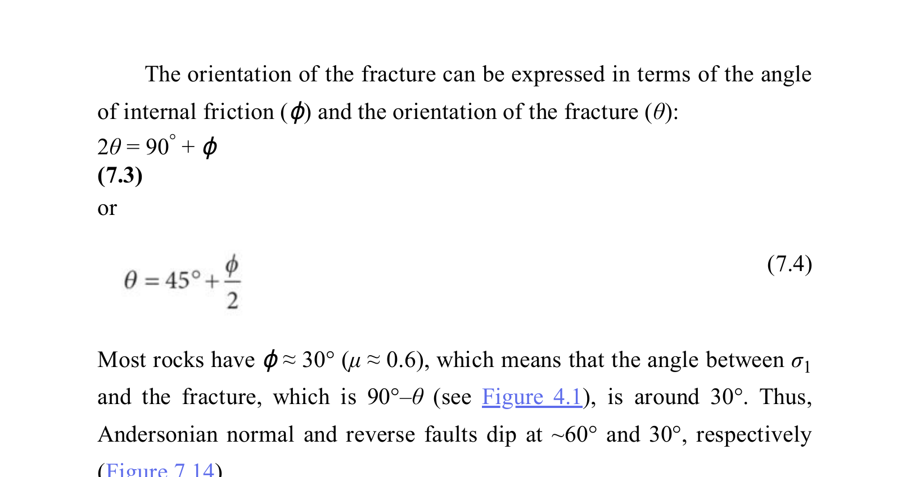

In structural geology and geomechanics (E.M. Anderson, 1905, 1951, The Dynamics of Faulting; Fossen, Ch. 8; Van der Pluijm & Marshak, Ch. 16), the Earth's surface is a free boundary contact with the atmosphere, meaning it can support no shear stress. Consequently, one of the three principal stress axes must be vertical, and the other two must lie in the horizontal plane:
| Fault Regime | Principal Stress Orientation | Angle to $\sigma_1$ | Theoretical Dip Angle (to Horizontal) | Angle to Vertical |
|---|---|---|---|---|
| Normal Fault | $\sigma_1$ is Vertical $\sigma_2, \sigma_3$ are Horizontal |
$\theta = 45^\circ - \frac{\phi}{2}$ from $\sigma_1$ | $\delta = 45^\circ + \frac{\phi}{2} \approx \mathbf{60^\circ}$ to horizontal | $\mathbf{30^\circ}$ to vertical |
| Thrust / Reverse Fault | $\sigma_3$ is Vertical $\sigma_1, \sigma_2$ are Horizontal |
$\theta = 45^\circ - \frac{\phi}{2}$ from $\sigma_1$ | $\delta = 45^\circ - \frac{\phi}{2} \approx \mathbf{30^\circ}$ to horizontal | $60^\circ$ to vertical |
| Strike-Slip Fault | $\sigma_2$ is Vertical $\sigma_1, \sigma_3$ are Horizontal |
$\theta = 45^\circ - \frac{\phi}{2}$ from $\sigma_1$ | $\delta = 90^\circ$ (Vertical plane) | $0^\circ$ to vertical |
According to the Coulomb failure criterion, conjugate shear fractures form at an angle $\theta$ to the maximum principal compressive stress ($\sigma_1$):
$$\theta = 45^\circ - \frac{\phi}{2}$$For typical lithospheric crustal rocks, the internal friction angle is $\phi \approx 30^\circ$. Therefore:
$$\theta = 45^\circ - \frac{30^\circ}{2} = 45^\circ - 15^\circ = 30^\circ \quad (\text{angle with vertical } \sigma_1)$$Thus, normal faults dip at an angle of $60^\circ$ to the horizontal and $30^\circ$ to the vertical. The statement claiming that the most common angle of normal faults is 45° to vertical is therefore unequivocally FALSE.

Correct Answer: (A) False — The statement "Most common angle of normal faults is 45° to vertical" is False. By Anderson's fault theory and empirical global measurements, normal faults characteristically dip at $\approx 60^\circ$ to the horizontal (i.e. $\approx 30^\circ$ to the vertical).
Triaxial compressive laboratory testing on a granite core yields an internal friction angle of $\phi = 34^\circ$. In a tectonic extensional basin where this granite undergoes Andersonian normal faulting, what will be: (a) the dip angle of the normal fault relative to the horizontal, and (b) the inclination angle of the fault plane relative to the vertical?
Solution:
1. Angle with maximum compressive stress ($\sigma_1$, which is vertical):
$$\theta_v = 45^\circ - \frac{\phi}{2} = 45^\circ - \frac{34^\circ}{2} = 45^\circ - 17^\circ = \mathbf{28^\circ\text{ to the vertical}}$$2. Dip angle relative to the horizontal ground surface:
$$\delta = 90^\circ - \theta_v = 45^\circ + \frac{\phi}{2} = 45^\circ + 17^\circ = \mathbf{62^\circ\text{ to the horizontal}}$$This confirms that normal faults are steep ($60^\circ ext{–}65^\circ$ to horizontal, $25^\circ ext{–}30^\circ$ to vertical), never $45^\circ$.